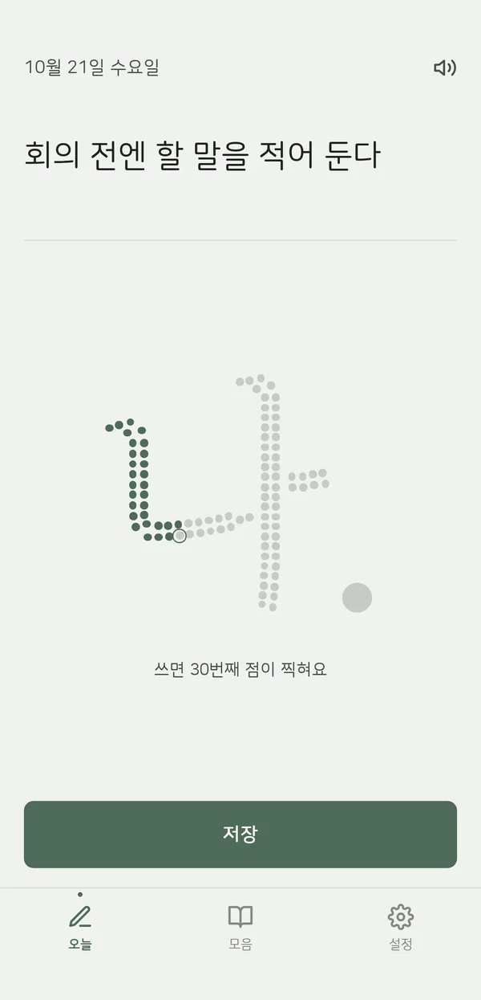
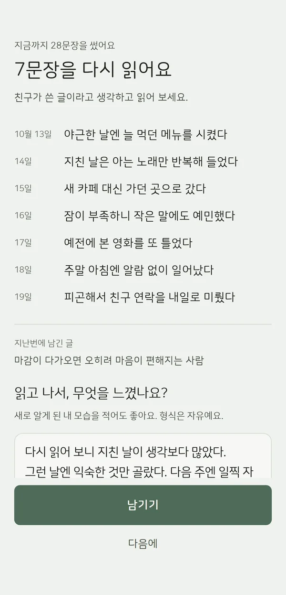
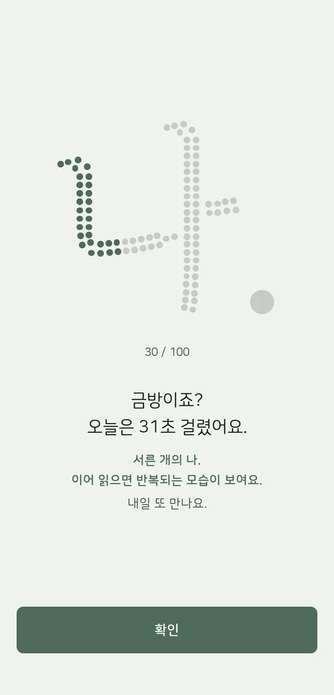

나는 나를
얼마나 알까요?
좋아하는 것, 싫어하는 것, 잘하는 것.
세 가지씩 바로 말해 보세요. 생각보다 막혀요.
가장 잘 알아야 할 사람,
나
평생 가장 오래 함께할 사람은 나예요. 그런데 내가 언제 기쁘고 언제 지치는지, 무엇을 잘하는지는 잘 모르고 지내요.
나를 알면 덜 헤매요. 지치는 이유를 알면 쉬는 법이 보이고, 좋아하는 걸 알면 고르는 게 쉬워져요.
하루 한 문장이면
충분해요
거창한 질문 대신, 오늘 눈에 띈 작은 나를 적어요.
-
1
오늘 발견한 나를 한 문장으로
배고프면 늘 국부터 뜬다. 모르는 길에서 지도부터 켰다. 이런 한 문장이면 돼요.

-
2
일곱 문장마다 다시 읽기
친구가 쓴 글처럼 읽으면 반복되는 내가 보여요. 느낀 것을 남기면 '내가 발견한 나'에 모여요.

-
3
점이 모여 마침표로
한 문장에 점 하나가 찍혀요. 백 번째 문장이 '나.'의 마침표를 찍어요.

나만 보는 기록
- 로그인이 없어요. 쓴 문장은 휴대폰 안에만 저장돼요.
- 광고가 없어요.
- 안 쓴 날 저녁엔 작은 질문 하나를 보내 줘요.
- 잔잔한 배경 음악이 흘러요. 언제든 끌 수 있어요.
- 기록은 파일로 내보내고 다시 가져올 수 있어요.
앱을 지우거나 휴대폰을 바꾸기 전에는 설정에서 내보내기를 해 두세요.
물음표였던 나를,
하루 한 문장으로 마침표까지
App Store와 Google Play 출시를 준비하고 있어요.